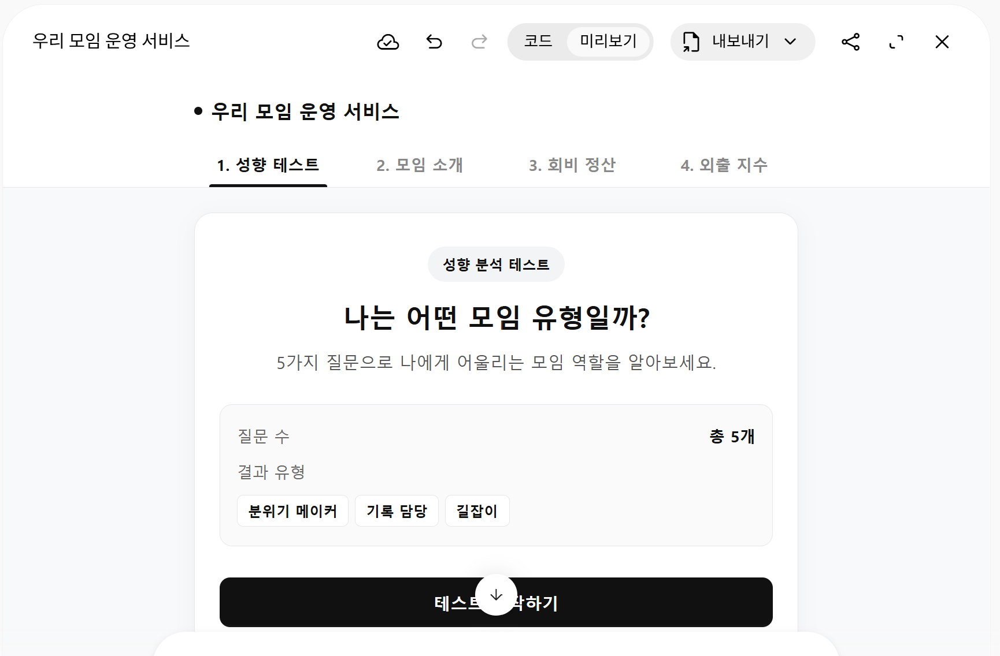

말로 설명하면 AI가 만들고, 우리는 눌러 보며 확인합니다. 오늘 만드는 성향 테스트는 다섯 번의 수업 동안 자라날 우리 모임 운영 서비스의 첫 메뉴예요.
러닝크루, 독서모임, 회사 동호회… 모임에는 분위기를 띄우는 사람, 기록을 챙기는 사람, 길을 정하는 사람이 있죠. 질문 다섯 개로 내 역할을 알려 주는 웹앱을 만듭니다.
메뉴 4개를 갖춘 우리 모임 운영 서비스와 그 첫 기능인 성향 테스트(질문 5개 → 점수 계산 → 결과 카드)
AI에게 한 번에 맡기면 그럴듯하지만 틀린 결과가 나오기 쉬워요. 단계마다 확인하는 습관이 바이브코딩의 핵심입니다.
기본 화면 → 질문 → 점수 계산 → 결과 화면 → 다듬기와 저장

1차시 성향 테스트 → 2차시 모임 소개 → 3차시 회비 정산 → 4차시 외출 지수 → 5차시 완성과 발표. 매번 지난 시간 파일에서 이어서 만듭니다.
실습 전에 꼭 알고 가면 좋은 내용이에요. 막히면 다시 와서 읽어 보세요.
만들고 싶은 것을 말로 설명하면 AI가 코드를 쓰고, 사람은 실행해 보고 확인하며 고쳐 나가는 방식이에요. 코드를 외우지 않아도 되지만, 맞는지 판단하는 건 사람의 몫입니다.
HTML은 뼈대(제목·버튼), CSS는 꾸미기(색·크기·배치), JavaScript는 동작(클릭하면 다음 질문, 점수 계산)이에요. 버튼 하나에도 세 가지가 함께 들어 있어요.
답을 고르면(입력) 점수를 계산하고(처리) 결과를 보여줘요(출력). 웹사이트는 정보를 보여주는 것이 중심이고, 웹앱은 이렇게 입력을 처리합니다.
변수는 값을 기억하는 이름표예요(분위기 메이커 점수 = 0). 조건문은 "가장 높은 점수가 이 유형이면 이 결과를 보여줘"처럼 조건에 따라 다르게 동작하게 해요. 동점이면 모두 보여주도록 규칙을 미리 정해 둡니다.
목적(무엇을) · 대상(누가 쓰나) · 기능(무엇이 되어야 하나) · 디자인(어떤 느낌) · 조건(지킬 것). "테스트 만들어 줘"보다 이 다섯 가지를 적을수록 원하는 결과에 가까워져요.
한 번에 다 만들면 어디서 틀렸는지 찾기 어려워요. 하나 만들기 → 눌러 보기 → 다음 기능 순서로 가고, 고칠 때마다 "기존 기능은 유지해 주세요"를 붙입니다.
① 화면이 제대로 보이나요? ② 버튼이 실제로 눌리나요? ③ 결과가 계산 규칙과 맞나요? ④ 고친 뒤에도 원래 기능이 그대로인가요?
직접 요청 · AI에게 프롬프트를 대신 쓰게 하는 메타프롬프트 · 마음에 드는 화면을 보고 요구사항을 뽑는 역프롬프트 · 일부만 바꾸는 수정 프롬프트 · 오류 해결 프롬프트
"예쁘게"보다 배경색 · 포인트 색 · 글자 크기 · 카드 모서리 · 여백 · 분위기를 적어요. 예: "아이보리 배경, 차분한 남색 포인트, 둥근 카드, 큰 글씨"
그 글꼴을 불러오는 설정이 함께 있어야 해요. 인터넷에서 불러오는 글꼴(웹폰트)은 인터넷이 끊기면 기본 글꼴로 보일 수 있고, 글꼴마다 사용 조건(라이선스)이 달라요.
각 단계가 끝나면 직접 눌러 확인하고 다음으로 넘어가요.
메뉴 4개
5개 · 보기 3개
정답표 확인
유형 카드
HTML 파일
각 단계 제목을 눌러 펼치세요. 프롬프트는 복사 버튼으로, 끝낸 단계는 완료 버튼으로 체크하세요.
처음부터 메뉴 4개를 모두 만들어 둡니다. 지금은 성향 테스트만 동작하고 나머지 3개는 "준비 중"이에요. 다음 차시마다 메뉴가 하나씩 살아나면서 서비스가 자랍니다.
Gemini 새 대화에서 Canvas를 켜고 붙여넣으세요.
제미나이 캔버스에서 실행할 웹앱을 만들어 주세요. 프로젝트 이름: 우리 모임 운영 서비스 성인 모임 참여자가 사용할 수 있는 깔끔하고 직관적인 웹서비스를 만들고 싶습니다. 1. 제작 환경 HTML, CSS, JavaScript를 사용하는 웹앱으로 만들어 주세요. 모든 코드는 하나의 HTML 파일 안에 작성해 주세요. 외부 라이브러리, 데이터베이스, 로그인, API 연결은 사용하지 마세요. 한국어로 제작하고 PC와 스마트폰 화면에 대응해 주세요. 제미나이 캔버스에서 바로 미리 볼 수 있도록 만들어 주세요. 2. 전체 메뉴 상단에 다음 4개 메뉴를 순서대로 배치해 주세요. 성향 테스트 모임 소개 회비 정산 외출 지수 현재는 '성향 테스트' 메뉴만 활성화합니다. 나머지 메뉴를 클릭하면 각각 다음 안내를 표시해 주세요. 모임 소개: 2차시에 만나요! 준비 중인 기능입니다. 회비 정산: 3차시에 만나요! 준비 중인 기능입니다. 외출 지수: 4차시에 만나요! 준비 중인 기능입니다. 준비 중 메뉴를 눌러도 웹앱이 멈추거나 다른 사이트로 이동하지 않게 해 주세요. 3. 성향 테스트 시작 화면 제목: 나는 어떤 모임 유형일까? 설명: 5가지 질문으로 나에게 어울리는 모임 역할을 알아보세요. '테스트 시작하기' 버튼 질문 수: 총 5개 결과 유형: 분위기 메이커, 기록 담당, 길잡이 아직 질문, 점수 계산, 결과 화면은 구현하지 마세요. 시작 버튼을 누르면 '다음 단계에서 질문 기능을 추가할 예정입니다.'라는 안내를 표시해 주세요. 4. 디자인 성인 대상의 깔끔하고 세련된 디자인 흰색 또는 밝은 아이보리 배경 차분한 포인트 색상 읽기 쉬운 큰 글씨 둥근 카드와 버튼 모바일에서도 메뉴와 버튼이 잘 보이도록 구성 5. 이번 단계의 완료 조건 메뉴 4개가 모두 보일 것 성향 테스트 시작 화면이 보일 것 시작 버튼을 누르면 안내가 나올 것 준비 중 메뉴 3개를 누르면 각각 안내가 나올 것 이번 단계에서는 요청한 기본 화면만 구현해 주세요. 다음 단계에서 질문 기능을 추가하겠습니다.
질문을 한 화면에 하나씩 보여주고, 이전 질문으로 돌아가 답을 바꿀 수 있게 합니다. 점수 계산은 아직 넣지 않아요. 한 번에 하나씩 만들어야 문제가 생겼을 때 어디서 생겼는지 바로 알 수 있습니다.
1단계와 같은 대화창에 이어서 붙여넣으세요.
현재 제미나이 캔버스에서 제작한 '우리 모임 운영 서비스'를 이어서 수정해 주세요. 기존 메뉴 4개와 전체 디자인을 유지하면서 성향 테스트의 질문 기능만 추가해 주세요. 1. 질문 구성 질문은 총 5개이고, 각 질문에는 보기 3개가 있습니다. 다음 질문과 보기를 문구 그대로 사용해 주세요. 질문 1. 모임에서 처음 만난 사람이 있다면? 먼저 다가가 반갑게 대화를 시작한다. 이름과 특징을 기억하고 기록해 둔다. 편하게 어울릴 수 있도록 자리를 안내한다. 질문 2. 모임 여행을 준비한다면? 모두가 즐길 수 있는 재미있는 활동을 생각한다. 준비물과 필요한 정보를 목록으로 정리한다. 이동 경로와 일정을 계획한다. 질문 3. 모임 활동이 끝난 후에는? 즐거웠던 이야기를 나누고 다음 만남을 제안한다. 사진과 활동 내용을 정리해 공유한다. 다음 모임 날짜와 장소를 조율한다. 질문 4. 모임에서 예상하지 못한 문제가 생긴다면? 사람들과 대화하며 분위기를 부드럽게 만든다. 현재 상황과 필요한 정보를 정리한다. 해결 순서를 정하고 역할을 나눈다. 질문 5. 새로운 모임을 만든다면? 새로운 사람들을 초대하고 참여를 독려한다. 활동 기록과 공지 내용을 체계적으로 관리한다. 모임의 목표와 운영 계획을 세운다. 2. 질문 화면 기능 '테스트 시작하기'를 누르면 첫 번째 질문이 나타나게 해 주세요. 질문은 한 화면에 하나씩 표시해 주세요. 보기 중 하나만 선택할 수 있게 해 주세요. 답변을 선택하면 '다음 질문' 버튼으로 이동할 수 있게 해 주세요. 답변을 선택하지 않았다면 다음 질문으로 이동할 수 없도록 해 주세요. 현재 진행 상태를 '1 / 5'처럼 표시해 주세요. 진행률 막대도 추가해 주세요. '이전 질문' 버튼으로 돌아갈 수 있게 해 주세요. 이전 질문으로 돌아가면 기존 선택이 그대로 표시되어야 합니다. 이전 답변을 다른 보기로 변경할 수 있어야 합니다. 첫 번째 질문에서는 '이전 질문' 버튼을 숨겨 주세요. 3. 답변 저장 방식 질문별 선택 결과를 JavaScript 배열에 저장해 주세요. 같은 질문에 답변을 다시 선택하면 기존 답변을 교체해 주세요. 아직 점수 계산 기능은 추가하지 마세요. 마지막 질문에서 '답변 확인하기' 버튼을 누르면 선택한 보기 번호 5개를 보여 주는 임시 확인 화면을 표시해 주세요. 임시 확인 화면에서 '답변 수정하기'를 누르면 마지막 질문으로 돌아갈 수 있게 해 주세요. 4. 기존 기능 보호 상단 메뉴 4개를 유지해 주세요. 준비 중인 메뉴 3개는 기존 안내 문구를 유지해 주세요. 기존 디자인과 레이아웃을 가능한 한 유지해 주세요. 이번 단계에서 요청하지 않은 기능은 추가하지 마세요. 수정 후 질문 이동, 이전 답변 유지, 답변 변경, 마지막 확인 화면이 정상 작동하는지 점검해 주세요.
| 이렇게 해 보면 | 이렇게 나와야 해요 |
|---|---|
| 시작 버튼 클릭 | 질문 1이 나온다 |
| 답을 고르지 않고 '다음 질문' | 넘어가지 않는다 |
| 질문 3에서 '이전 질문' | 질문 2가 나오고 내가 고른 답이 표시돼 있다 |
| 질문 2의 답을 바꾸기 | 새로 고른 답이 유지된다 |
| 마지막 질문까지 답하고 확인 | 내가 고른 보기 번호 5개가 보인다 |
결과가 그럴듯해 보여도 계산이 틀리면 소용없어요. 그래서 예쁜 결과 화면보다 먼저 점수가 맞는지 숫자로 확인합니다. 1번 보기는 분위기 메이커, 2번은 기록 담당, 3번은 길잡이에 1점씩 들어가요.
같은 대화창에 이어서 붙여넣으세요.
현재 제작 중인 '우리 모임 운영 서비스'에 성향 테스트 점수 계산 기능을 추가해 주세요. 기존 질문 5개, 보기 15개, 답변 수정 기능, 메뉴 4개와 디자인은 유지해 주세요. 1. 점수 계산 규칙 모든 질문에서 보기 번호에 따라 다음 점수를 부여합니다. 1번 보기: 분위기 메이커 +1점 2번 보기: 기록 담당 +1점 3번 보기: 길잡이 +1점 각 질문에서 선택한 보기 하나에만 1점을 부여합니다. 질문 5개를 모두 완료하면 세 유형의 점수 합계는 반드시 5점이어야 합니다. 2. 점수 계산 방식 질문별 답변을 저장한 배열을 기준으로 점수를 계산해 주세요. 마지막 질문을 완료했을 때 저장된 답변 5개를 처음부터 읽어서 점수를 계산해 주세요. 점수를 계산하기 전에 세 유형의 점수를 모두 0으로 초기화해 주세요. 이전 답변을 수정하면 수정된 답변을 기준으로 점수를 새로 계산해 주세요. 답변을 선택할 때마다 기존 점수에 누적하는 방식은 사용하지 마세요. 같은 답변을 여러 번 선택하거나 이전 질문으로 돌아가더라도 점수가 중복되지 않게 해 주세요. 3. 임시 점수 확인 화면 기존 '답변 확인하기' 화면을 '점수 확인하기' 화면으로 변경해 주세요. 화면에 다음 내용을 표시해 주세요. 분위기 메이커: ○점 기록 담당: ○점 길잡이: ○점 총점: 5점 가장 높은 점수를 받은 유형 선택한 답변 번호 5개 '답변 수정하기' 버튼 4. 동점 처리 규칙 가장 높은 점수를 받은 유형이 하나라면 해당 유형을 표시해 주세요. 가장 높은 점수가 같은 유형이 두 개 이상이라면 공동 결과로 모두 표시해 주세요. 동점인 경우 임의로 한 유형만 선택하지 마세요. 5. 검증 예제 다음 입력과 결과가 정확히 일치해야 합니다. 예제 A 답변: 1, 1, 1, 1, 1 점수: 분위기 메이커 5, 기록 담당 0, 길잡이 0 최고 유형: 분위기 메이커 예제 B 답변: 2, 2, 2, 2, 2 점수: 분위기 메이커 0, 기록 담당 5, 길잡이 0 최고 유형: 기록 담당 예제 C 답변: 3, 3, 3, 3, 3 점수: 분위기 메이커 0, 기록 담당 0, 길잡이 5 최고 유형: 길잡이 예제 D 답변: 1, 2, 1, 2, 3 점수: 분위기 메이커 2, 기록 담당 2, 길잡이 1 최고 유형: 분위기 메이커와 기록 담당 공동 결과 6. 기존 기능 보호 질문 문구와 보기 순서를 변경하지 마세요. 답변 수정 기능을 유지해 주세요. 상단 메뉴 4개를 유지해 주세요. 준비 중인 메뉴 3개를 유지해 주세요. 아직 정식 성향 결과 카드나 설명은 추가하지 마세요. 점수 계산 기능만 추가하고, 위 네 가지 예제와 기존 기능을 점검해 주세요.
| 고른 보기 번호 | 분위기 메이커 | 기록 담당 | 길잡이 | 결과 |
|---|---|---|---|---|
| 1 · 1 · 1 · 1 · 1 | 5점 | 0점 | 0점 | 분위기 메이커 |
| 2 · 2 · 2 · 2 · 2 | 0점 | 5점 | 0점 | 기록 담당 |
| 3 · 3 · 3 · 3 · 3 | 0점 | 0점 | 5점 | 길잡이 |
| 1 · 2 · 1 · 2 · 3 | 2점 | 2점 | 1점 | 분위기 메이커와 기록 담당 공동 |
🔎 중복 계산 확인: 1 · 1 · 1 · 1 · 1로 답한 뒤 첫 번째 답만 2번으로 바꾸면 4 · 1 · 0이 나와야 해요. 합계가 6점이 되면 오류예요.
계산이 맞는 걸 확인했으니 이제 사람이 보기 좋은 결과 화면으로 바꿉니다. 점수는 지우지 않고 결과 아래에 작게 남겨 두어 언제든 맞는지 확인할 수 있게 해요.
같은 대화창에 이어서 붙여넣으세요.
현재 제작 중인 '우리 모임 운영 서비스'의 성향 테스트 결과 화면을 완성해 주세요. 3단계에서 구현한 점수 계산 규칙과 답변 수정 기능은 절대 변경하지 마세요. 1. 결과 화면 기존 임시 점수 확인 화면을 정식 성향 결과 화면으로 발전시켜 주세요. 화면에는 다음 내용을 표시해 주세요. 제목: 나의 모임 성향 결과 가장 높은 점수를 받은 유형 이름 유형을 나타내는 아이콘 유형별 특징 설명 모임에서 잘하는 역할 다른 유형과 협력하는 방법 '다시 시작하기' 버튼 2. 유형별 결과 문구 분위기 메이커 특징: 사람들과 자연스럽게 어울리고 모임에 활력을 더하는 유형입니다. 잘하는 역할: 새로운 사람 환영하기, 모임 분위기 조성하기, 참여 독려하기 협력 팁: 기록 담당과 함께 활동을 정리하고 길잡이와 함께 모임을 운영해 보세요. 기록 담당 특징: 중요한 정보를 놓치지 않고 모임의 활동을 체계적으로 정리하는 유형입니다. 잘하는 역할: 활동 기록하기, 공지 정리하기, 사진과 자료 관리하기 협력 팁: 분위기 메이커와 함께 즐거운 순간을 기록하고 길잡이와 함께 계획을 정리해 보세요. 길잡이 특징: 목표를 정하고 일정을 계획하며 모임이 원활하게 진행되도록 돕는 유형입니다. 잘하는 역할: 일정 계획하기, 역할 분담하기, 활동 순서 정하기 협력 팁: 분위기 메이커와 함께 참여를 이끌고 기록 담당과 함께 진행 상황을 관리해 보세요. 3. 동점 결과 최고 점수가 같은 유형이 두 개라면 두 유형을 모두 표시해 주세요. 각 유형의 특징과 잘하는 역할을 모두 보여 주세요. 동점 유형을 임의로 하나만 선택하지 마세요. 4. 점수 표시 유지 결과 화면 아래쪽에 점수를 작게 표시해 주세요. 예시: 분위기 메이커 3점 · 기록 담당 1점 · 길잡이 1점 점수는 항상 실제 계산 결과와 일치해야 합니다. 5. 다시 시작하기 '다시 시작하기'를 누르면 첫 번째 질문으로 돌아가게 해 주세요. 이전에 선택한 답변을 모두 초기화해 주세요. 점수도 모두 0으로 초기화해 주세요. 다시 검사하면 새로운 답변에 따라 결과가 달라져야 합니다. 6. 답변 수정 결과 화면에도 '답변 수정하기' 버튼을 제공해 주세요. 버튼을 누르면 마지막 질문으로 돌아갑니다. 기존 선택을 유지해 주세요. 답변을 수정한 후 결과를 다시 확인하면 수정된 점수와 유형을 표시해 주세요. 7. 기존 기능 보호 질문 5개와 보기 15개를 유지해 주세요. 보기별 점수 규칙을 변경하지 마세요. 동점 처리 규칙을 변경하지 마세요. 상단 메뉴 4개와 준비 중 안내를 유지해 주세요. 전체 디자인을 가능한 한 유지해 주세요. 정식 결과 화면을 추가한 뒤 점수 계산과 기존 기능이 정상 작동하는지 점검해 주세요.
새 기능은 넣지 않고 모양만 정리한 뒤 파일로 저장합니다. 다음 차시에 이 파일에서 이어서 만들기 때문에 저장이 가장 중요해요.
같은 대화창에 이어서 붙여넣으세요.
현재 제미나이 캔버스에서 완성한 '우리 모임 운영 서비스'를 최종 점검하고 디자인을 소폭 개선해 주세요. 중요: 이번 단계에서는 새로운 기능을 추가하거나 기존 기능을 다시 설계하지 마세요. 1. 디자인 개선 현재의 전체적인 색상과 디자인 방향을 유지해 주세요. 제목과 본문 글씨를 읽기 쉽게 정리해 주세요. 버튼 크기와 간격을 통일해 주세요. 질문과 결과 화면의 카드 디자인을 통일해 주세요. 스마트폰에서도 메뉴와 버튼이 겹치지 않게 해 주세요. 지나친 애니메이션이나 복잡한 효과는 추가하지 마세요. 2. 기존 기능 점검 다음 기능이 모두 유지되는지 확인해 주세요. 상단 메뉴 4개 표시 성향 테스트 시작하기 질문 5개 표시 각 질문의 보기 3개 표시 이전 질문으로 돌아가기 기존 답변 수정하기 점수 계산 동점 결과 표시 유형별 결과 설명 점수표 표시 다시 시작하기 준비 중 메뉴 안내 3. 계산 규칙 유지 1번 보기: 분위기 메이커 +1점 2번 보기: 기록 담당 +1점 3번 보기: 길잡이 +1점 총점은 반드시 5점 동점이면 공동 결과 표시 답변 수정 시 전체 점수 재계산 4. 오류 수정 원칙 실제 오류가 확인된 부분만 최소한으로 수정해 주세요. 기존에 정상 작동하는 기능은 변경하지 마세요. 질문 문구와 보기 순서를 바꾸지 마세요. 기존 결과 설명 문구를 유지해 주세요. 새로운 외부 라이브러리, API, 데이터베이스를 추가하지 마세요. 5. 최종 저장 완성된 웹앱을 하나의 HTML 파일로 유지해 주세요. 파일 이름은 다음과 같이 사용할 예정입니다. 우리모임_1차시_완성.html 다음 차시에는 이 파일을 다시 불러와 '모임 소개' 기능을 추가할 예정이므로, 메뉴 구조와 기존 성향 테스트 기능이 유지되도록 해 주세요. 최종 코드가 준비되면 캔버스에서 미리 보기로 확인할 수 있게 해 주세요. 실제로 실행하지 않은 테스트는 실행했다고 주장하지 말고, 사용자가 직접 확인해야 하는 항목을 구분해 알려 주세요.
문제가 생기면 무슨 일이 일어났는지와 원래 어떻게 돼야 하는지를 대괄호 자리에 적어서 보내세요. "안 돼요"보다 훨씬 빨리 고쳐집니다.
같은 대화창에 붙여넣고 [ ] 두 곳을 내 상황으로 바꾸세요.
현재 제미나이 캔버스에서 제작 중인 웹앱에 오류가 있습니다. 먼저 현재 코드를 분석하고 오류 원인을 확인해 주세요. 오류 상황: [여기에 실제로 발생한 문제를 작성] 기대하는 정상 동작: [어떻게 작동해야 하는지 작성] 수정 조건: 오류와 관련된 부분만 최소한으로 수정해 주세요. 기존 메뉴 4개와 정상 작동하는 기능은 유지해 주세요. 질문 5개와 보기 15개의 문구를 변경하지 마세요. 점수 계산 규칙과 동점 처리 규칙을 변경하지 마세요. 수정 후 기존 기능에 영향을 주지 않았는지 확인해 주세요. 확인하지 못한 부분은 직접 테스트가 필요하다고 알려 주세요. 기존 웹앱을 처음부터 새로 만들지 말고 현재 코드를 기준으로 수정해 주세요.
5단계까지 끝냈다면 글꼴을 바꿔 보세요. 바꾼 뒤에는 정답표로 다시 확인하고 다시 내려받아 같은 이름으로 저장하세요.
같은 대화창에 붙여넣으세요. Pretendard 대신 Noto Sans KR 같은 다른 글꼴 이름을 넣어도 돼요.
현재 완성된 웹앱의 전체 글꼴을 Pretendard(프리텐다드)로 변경해 주세요. 제목, 본문, 메뉴, 버튼, 질문, 결과 화면에 모두 적용해 주세요. 웹폰트를 불러와 실제로 표시되도록 설정해 주세요. 글꼴을 불러오지 못할 경우 기본 한글 글꼴로 표시되게 해 주세요. 기존 색상, 글씨 크기, 레이아웃, 질문, 점수 계산, 모든 기능은 변경하지 마세요. 현재 HTML 파일 내부의 CSS만 수정하고 별도의 CSS 파일은 만들지 마세요. 글꼴 변경 후 수정한 CSS 부분을 알려주세요.
아이디어는 있는데 어떻게 설명할지 막막할 때, AI에게 질문해 달라고 하세요. 대답만 하면 AI가 기획을 정리하고 제작 프롬프트까지 단계별로 써 줍니다.
새 채팅에 붙여넣고 AI의 질문에 하나씩 답하세요.
나는 코딩을 모르는 초보자입니다. 제미나이 캔버스로 나만의 웹앱을 만들고 싶지만, 아이디어를 어떻게 구체적으로 설명해야 할지 모르겠습니다. 당신은 웹앱 기획을 도와주는 전문가입니다. 내가 만들고 싶은 앱의 목적, 사용자, 필요한 기능, 디자인을 파악할 수 있도록 질문해 주세요. 한 번에 질문을 너무 많이 하지 말고, 쉬운 질문부터 하나씩 해 주세요. 내가 모르는 기술 용어는 쉬운 말로 설명해 주세요. 내가 답한 내용을 바탕으로 앱의 구성과 필요한 기능을 정리해 주세요. 기획이 끝나면 제미나이 캔버스에서 사용할 제작 프롬프트를 단계별로 작성해 주세요. 한 번에 모든 기능을 만들지 않고, 기본 화면부터 하나씩 제작하고 확인할 수 있게 구성해 주세요. 먼저 내가 어떤 앱을 만들고 싶은지 물어봐 주세요.
내가 만들고 싶은 웹앱을 구체화할 수 있게 쉬운 질문부터 하나씩 해 줘. 다 정해지면 Gemini Canvas용 단계별 제작 프롬프트를 써 줘.
참고하고 싶은 화면 캡처를 첨부하고 붙여넣으세요.
첨부한 화면은 내가 참고하고 싶은 웹사이트 또는 웹앱 디자인입니다. 이 화면을 분석해 다음 항목을 정리해 주세요. 전체적인 디자인 분위기 주요 색상과 배경색 글씨 크기와 굵기, 글꼴의 특징 메뉴와 버튼의 배치 카드의 형태와 간격 PC와 모바일에서 고려할 화면 구성 사용자에게 보여주는 정보의 순서 이미지에서 확인할 수 없는 기능은 임의로 단정하지 말고 별도로 구분해 주세요. 분석 결과를 바탕으로 제미나이 캔버스에서 유사한 분위기의 웹앱을 제작할 수 있는 디자인 프롬프트를 작성해 주세요. 원본 사이트의 로고, 이미지, 문구를 그대로 복제하지 말고 디자인 원칙을 참고하도록 작성해 주세요.
공통 미션을 끝냈다면 새 채팅에서 나만의 서비스를 만들어 보세요. 오늘 배운 방식(질문 → 점수 → 결과)을 그대로 씁니다. 아래에서 고르기만 해도 프롬프트가 완성돼요.
고른 내용이 빨간 글씨로 들어가요. 미션 1부터 같은 새 대화창에서 차례로 쓰세요.
보기 순서를 질문마다 섞어도 점수가 정확히 계산되게 고쳐 보세요. 어떤 보기가 어떤 유형에 점수를 주는지 AI에게 표로 보여 달라고 하면 검증하기 쉬워요.
말로 설명해서 웹앱을 만들고, 정답표로 직접 확인하고, 다음 시간에 이어 쓸 파일까지 저장했어요. 다음 시간에는 이 파일을 올려서 모임 소개 메뉴를 살립니다.